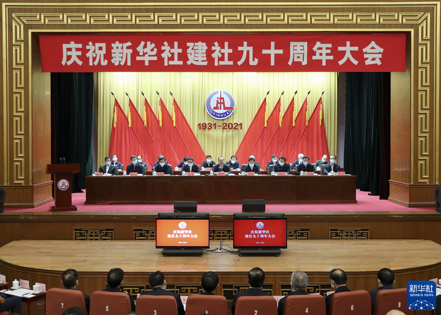
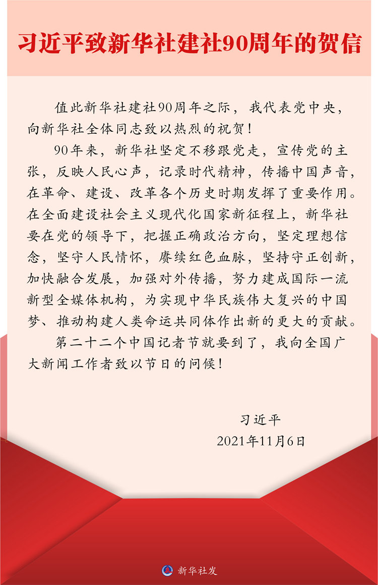

新华社北京11月6日电 中共中央总书记、国家主席、中央军委主席习近平致信祝贺新华社建社90周年，代表党中央向新华社全体同志致以热烈的祝贺，并在第二十二个中国记者节到来之际，向全国广大新闻工作者致以节日的问候。
习近平在贺信中指出，90年来，新华社坚定不移跟党走，宣传党的主张，反映人民心声，记录时代精神，传播中国声音，在革命、建设、改革各个历史时期发挥了重要作用。
习近平强调，在全面建设社会主义现代化国家新征程上，新华社要在党的领导下，把握正确政治方向，坚定理想信念，坚守人民情怀，赓续红色血脉，坚持守正创新，加快融合发展，加强对外传播，努力建成国际一流新型全媒体机构，为实现中华民族伟大复兴的中国梦、推动构建人类命运共同体作出新的更大的贡献。

6日上午，庆祝新华社建社90周年大会在京举行，会上宣读了习近平的贺信。中共中央政治局委员、中宣部部长黄坤明出席大会并讲话。他说，要认真学习贯彻习近平总书记重要指示精神，坚持以习近平新时代中国特色社会主义思想为指导，坚持政治家办社原则，传承红色基因，坚守初心本色，心怀“国之大者”，全面深入宣传党的创新理论，广泛传播党的主张，积极反映人民心声，用心描绘时代画卷，用力奏响时代强音，更好履行党的新闻舆论工作职责使命，努力创造无愧于党、无愧于人民、无愧于时代的新业绩。
会上，新华社负责人和离退休老同志、青年记者、外籍员工代表发言。
1931年11月7日，新华社的前身红色中华通讯社在瑞金成立，1937年1月在延安改名为新华社。经过90年的发展，新华社现拥有国内外200多个分支机构，以15个语种为全球8000家用户提供新闻信息，覆盖世界一半以上人口。
